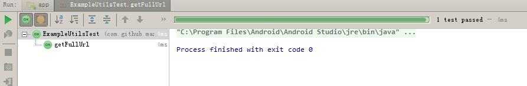

前序
最近抽空整理下项目，顺手整理了单元测试，于是记录下自己学习单元测试的心得，让更多的人快速用上单元测试提高开发效率。本文主要讲解如何使用JUnit框架进行单元测试，不会提及单元测试优缺点。
在Android项目中使用JUnit
记得在Eclipse中集成Junit框架是一件很复杂的事情，首先要导入lib包，然后配置...现在如果使用Android Studio的话什么工作都不需要处理，创建一个新的项目就帮你配置好整个JUnit框架，你只需要专心写测试类即可。而且测试类也是可以自动生成的,如下图所示：
可以看到生成app/src/main为源码目录，对应app/src/test为测试类目录，Android Studio会自动生成一个ExampleUnitTest类，实际上这个test目录下的包名可以与src目录的不一样。
以上图为例，我写了一个ExampleUtils作为本次测试例子，其代码为：
public class ExampleUtils {
/**
* 获取完整的地址路径
*
* @param url 可能不完整的路径
*/
public static String getFullUrl(String url) {
if (!url.startsWith("http")) {
return "http://" + url;
}
return url;
}
}
如果你要创建一个对应的测试类，比较笨的方法就是到app/src/test目录下创建一个名字相近的ExampleUtilsTest类，然后一个个需要测试的方法都写一遍testXXX()的单元测试方法。
强大的Android Studio可以帮我们完成这个操作，在任意需要测试的类（或者方法）下面按下Ctrl+Shift+T（这是默认热键，你也可以右键->Go To->Test）弹出如下提示： 如果你已经创建过，则会提示对应的测试类让你跳转过去，同样测试类也可以利用这个方法跳转到被测试类。根据上述操作创建一个新的测试类，然后会弹出提示界面： 我们使用的库是JUnit4，这个无需修改，一般名字Class Name也无需修改，Generate这个后文再说，总之现在Member中勾选需要测试的方法。注意如果一个方法没有出现在这个列表上，证明这个方法无法测试。比如一个private声明的方法，他不需要测试也无法测试，因为它是属于类内部的过程，而单元测试不关系这个过程。
选择方法后会提示你选择目标目录，可能为了兼容以前的版本还是怎么的，这里我们只需要选择第二个app/src/test目录，与Android Studio自动生成的目录相似即可：
可以看到生成的类，有些人可能喜欢改成testXXX，这个则需要自己手动修改了。点击每个方法前面的三角形就可以单独测试一个方法，点击类前面的两个三角形按钮则是一次运行类中所有的测试方法： 我们可以编写单元测试方法（Assert用法后文会说明）：
@Test
public void getFullUrl() throws Exception {
String testUrl = "https://maxwell-nc.github.io";
String fullUrl = ExampleUtils.getFullUrl(testUrl);
Assert.assertEquals(testUrl, fullUrl);//假设fullUrl与testUrl相同
}
点击Run后则会生成一个测试结果，如果一条绿条就证明已经成功通过测试了，否则的话你可以查看哪一个方法存在问题，然后处理。 
批量测试和生产报告
假设你只有一个类或者只有几个类需要测试的话，那可以直接使用上文说的方法来测试，但是假设你有很多的类和方法需要测试的话上面的操作就显得是十分笨拙。Android Studio的Gradle插件为我们生成了三个任务：
- testDebugUnitTest
- testReleaseUnitTest
- test
其中前两个任务是分别执行为Debug和Release模式下的所有单元测试，第三个任务就是执行前面两个任务。
你可以在Terminal里面使用
gradlew testDebugUnitTest
来执行命令，由于是Wrapper可能需要额外的下载配置时间，也可以直接在面板中选择Task执行（使用本地的Gradle）：
等待执行完成就可以看到build/reports/tests/目录下对应的Html报告：
使用浏览器打开可以看到详细测试报告：
JUnit Assert
下面进入正题，上文我们使用了一个Assert.assertEquals方法来判断fullUrl和testUrl是否相同，其中这个Assert类就是用来验证结果的，有“假设”的意思。比如assertEquals方法就是“假设相同”的意思，如果不相同则会报错。
那么除了assertEquals之外还有什么方法呢？我们可以从Assert源码结构观察出来，下面我们列举一下：
- assertTrue 假设为真
- assertFalse 假设为假
- assertEquals 假设相同（基本数据类型或者对象）
- assertNotEquals 假设不相同（基本数据类型或者对象）
- assertNull 假设为空
- assertNotNull 假设不为空
- assertSame 假设相同（只能是对象）
- assertNotSame 假设不相同（只能是对象）
- assertArrayEquals 假设数组相同
可以看到源码中这些方法都有重载第一个参数多了String的方法。这个String是用于自定义错误信息，如果“假设”不符合预期，那么提示的错误信息使用这个String来指定。
有时候计算机表示的数尤其是浮点型类型，可能两个值存在误差，设置一个可接受无法范围，也可以让假设通过。比如：
Assert.assertEquals(1, 1.01, 0.1);
上面表示预期值和实际值最大误差小于等于0.1即“假设”成立。另外注意这些方法的期望值都是前一个参数，实际值是后一个参数，不要写反了。
JUnit Annotation
还记得上边创建测试类的时候出现了setUp和tearDown两个方法吗？分别对应@Before和@After这两个注解。实际上根据JUnit框架的设计，每个单元测试方法可以简单划分为：
- setUp 对应 @Before注解的方法
- test 对应 @Test注解的方法
- tearDown 对应 @After注解的方法
如果创建时勾选这两个方法，则会生成：
@Before
public void setUp() throws Exception {
}
@After
public void tearDown() throws Exception {
}
这两个方法会在当前类中每一个单元测试方法执行之前和执行之后分别执行。比如说需要创建一个实例，new instance()操作可以直接写在setUp方法中，减少冗余代码。同理假设要关闭一个文件流的话也可以写在tearDown方法中。
注意看看@Test注解的注释，可以看到，它可以接受两个参数，一个是预期异常，一个是超时时间。
//预期异常，不报错（如果不出现异常则报错）
@Test(expected=IndexOutOfBoundsException.class)
public void outOfBounds() {
new ArrayList().get(1);
}
//超时报错
@Test(timeout=100)
public void infinity() {
while(true);
}
//这种情况要小心，注意误差问题，有可能正确，有可能错误
@Test(timeout=100)
public void sleep100() {
Thread.sleep(100);
}
除了上述的注解之外，JUnit还提供其他很多方便的注解，我们可以通过查看JUnit的包看到比较常用的：
- @BeforeClass 每一个测试类执行前的操作方法注解
- @AfterClass 每一个测试类执行完后的操作方法注解
- @Ignore 忽略某个测试方法注解（可以传入原因)
由于JUnit担心我们这些注解还不够用，所以给我们自定义规则的机会，于是有@Rule这个注解给我们去自定义规则。
JUnit Rule
JUnit本身自带很多Rule，可以在org.junit.rules包中找到,例如比较简单的Timeout规则，可以直接创建一个类成员：
@Rule
public Timeout timeout = new Timeout(100, TimeUnit.MILLISECONDS);
上述规则应用到类中所有测试方法，假设方法超过100毫秒则会报错，注意这个成员规则对象必须是Public的，还有一个比较常用的DisableOnDebug规则，可以设置在Run模式下使用的规则而Debug模式不使用的规则，如下代码：
@Rule
public DisableOnDebug debug = new DisableOnDebug(new Timeout(100, TimeUnit.MILLISECONDS));
上述代码表示Run模式测试则会限制100毫秒超时，而Debug模式不会限制。虽然JUnit给我们内置了很多自定义规则，但这显然是不够用的，所以需要我们去自定义规则，下面我们来说说如何自定义Junit Rule。
在rules包下有一个TestRule接口用于给用户自定义Junit Rule，创建一个类去实现这个接口。然后重写apply方法。代码如下：
public class MyTestRule implements TestRule {
@Override
public Statement apply(Statement base, Description description) {
return null;
}
}
其中apply方法中的base参数代表单元测试的语句，他身上的方法：
base.evaluate();//执行单元测试操作
而description则可以获取改单元测试方法的名称、注解、类名等等的描述。我们可以写一个简单的例子，如下：
@Override
public Statement apply(final Statement base, Description description) {
return new Statement() {
@Override
public void evaluate() throws Throwable {
System.out.println("before");//测试前打印before
base.evaluate();
System.out.print("after");//测试后打印after
}
};
}
然后在需要使用这个规则的测试类中声明这个规则：
@Rule
public MyTestRule myTestRule = new MyTestRule();
运行测试方法即即可以看到输出：
 这样代表自定义的规则生效了。
这样代表自定义的规则生效了。
尾声
通过上文，我们学习了JUnit的用法，但是你会发现，光有JUnit框架并不能做完整的单元测试，比如说你想要使用Log.i("tag","msg");的时候，单元测试会失败并且提示:
java.lang.RuntimeException: Method i in android.util.Log not mocked.
这是因为JUnit并不能在纯Java层面做测试，使用非纯Java API就会报错。这需要一些Mock框架来帮助我们进行测试，这个后面抽空会写一篇新的博文介绍。
相关文章
Android单元测试之JUnit框架： https://maxwell-nc.github.io/android/junitTest.html
Android单元测试之Mockito框架： https://maxwell-nc.github.io/android/mockitoTest.html
Android单元测试之Robolectric框架： https://maxwell-nc.github.io/android/robolectricTest.html
Android单元测试之AssertJ框架： https://maxwell-nc.github.io/android/assertjTest.html
原创文章，欢迎转载，请保留出处。有任何错误、疑问或者建议，欢迎指出。
请注明文章出自于：https://maxwell-nc.github.io/android/junitTest.html